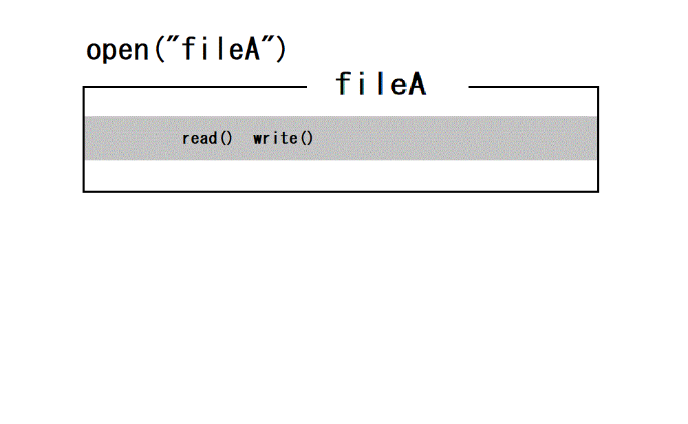
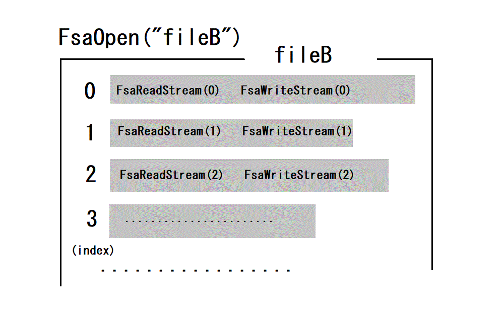

| Overview | API references | Sample program(tans.c) |
| I/O steps by standard C library | I/O steps by FSA | Description |
|---|---|---|
|
#include <stdio.h> #include <fcntl.h> #include <unistd.h> int fd; fd=open(pathname,openmode); read(fd,buf,count); write(fd,buf,count); close(fd); |
/* fsa.h must be included before using FSA API */ #include "fsa.h" FSA_HANDLE h; FsaOpen(&h,pathname, openmode); FsaReadStream(h,i,buf,from,count); FsaWriteStream(h,i,buf,from,count); FsaClose(&h); |
It is the same as in standard C/C++ API and FSA API that the target file to be accessed must be opened at first and closed when finished. In standard C/C++, write() corresponds to FSA FsaWriteStream(),and read() to FsaReadStream(). In FSA,you need to specify starting byte position 'from' for I/O processing,because seek() is not supported. Note the important difference that,in FsaReadStream() and FsaWriteStream(),one more argument i which is the index of the target stream is specified. In FSA,I/O with different index i is completely independent and different. Also note that any stream identified by index i has its own stream size. |
| Standard C I/O | FSA I/O |
|---|---|
|  |  |
All data/informations are passed or received through arguments except function status.
Initial size of every streams are zero.
All function names exported by FSA begin "Fsa".
Before using any function listed bellow,fsa.h must be included in your codes(#include "fsa.h").
| Function | Description |
|---|---|
| FsaOpen(FSA_HANDLE *h,const char* file, const char mode) |
opens the target file.
|
| FsaWriteStream(FSA_HANDLE h, U_INT i, void* buff,U_LONG from, U_INT bytes) | writes data to specified stream.
|
| FsaReadStream (FSA_HANDLE h, U_INT i, void* buff,U_LONG from, U_INT bytes) |
reads data from specified stream.
|
| FsaClose(FSA_HANDLE* h) | closes FSA file proccessed. Even if any error is detected,the error handler is not called if it is set. |
n can be obtained by calling FsaGetMaxStreamCount(h,&m) where n=m-1. And,m can be extended to any number by FsaExtendMaxStreamCount(h,M). (Total count of streams will be increased at least M).
| 関数名 | 説明（引数） |
|---|---|
| FsaGetStreamSize(FSA_HANDLE h, U_INT i, U_LONG* size) | sets the current byte size of the stream i to size. |
| FsaTrimStream(FSA_HANDLE h, U_INT i, U_LONG from) | sets the current byte size of the stream i to 'from' (every data after from will be deleted). |
| FsaGetMaxStreamCount(FSA_HANDLE h, U_INT *cs) | sets the maximum number of the streams currently accessible to cs. |
| FsaExtendMaxStreamCount(FSA_HANDLE h, U_INT cs) | extens(increases) the maximum number of the streams at least cs. |
| FsaSetFsaTag(FSA_HANDLE h, U_LONG tag) | sets user specific data tag,which is kept in the header,to FSA file(h). |
| FsaGetFsaTag(FSA_HANDLE h, U_LONG* tag) | gets user specific data to tag from FSA file. |
| FsaSetStreamTag(FSA_HANDLE h, U_INT i, U_LONG tag) | set user specific data tag,which is kept in each stream directory,to stream i. |
| FsaGetStreamTag(FSA_HANDLE h, U_INT i, U_LONG* tag) | gets user specific data tag from stream i. |
| FsaSetErrHandler(FSA_HANDLE h, FSA_ERROR_HANDLER f) | sets(registers) the address of the error handler f. If f is NULL(0),then previously registerred adress will be deleted. |
| FsaGetErrHandler(FSA_HANDLE h, FSA_ERROR_HANDLER *f) | gets error handleraddress to f. If obtained f is NULL(0),then no error handler has not been registerred yet. |
| FsaGetOpenMode(FSA_HANDLE h, char *mode) | gets open mode (capitalized)character to mode which was specified FsaOpen(). |
int ErrorFunc(
/* All arguments are set by FSA */
FSA_HANDLE handle, /* FSA_HANDLE currently running. */
const char* function, /* FSA function name the error detected */
int fsa_code, /* FSA error code(see fsa.h) that FSA function detected.
(If this is FSA_ERROR_UNDEFINED,then infomations after err_no may be undefined. */
int err_no, /* copy of C system's errno. Use C standard function strerror(err_no) for detail. */
const char* msg, /* The error message that FSA function can describe. */
const char* source_file, /* The source file the error occured. */
int source_line /* The source line the error occured. */
)
{
char ch;
printf(" FSA Error: f=%s code=%d c_er=%d msg=%s file=%s line=%d\n", function, fsa_code, err_no, msg, source_file, source_line);
if(err_no!=0) printf(" c error=%d:%s\n",err_no,strerror(err_no));
printf("Continue or exit (c|e)?");
do {
ch = toupper(getchar());
} while (ch != 'C' && ch != 'E');
if (ch == 'E') {
FsaClose(&handle);
exit(EXIT_FAILURE);
}
return fsa_code;
}